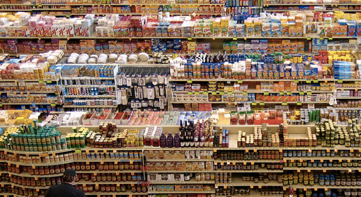

What Happens To Old And Expired Supermarket Foods
Nadia Arumugam, forbes.comAs darkness falls, your local supermarket becomes a hive of activity. From canned vegetables and salad dressings to fresh vegetables and deli meats, countless items are removed from shelves by night staff. Approaching their expiratio…